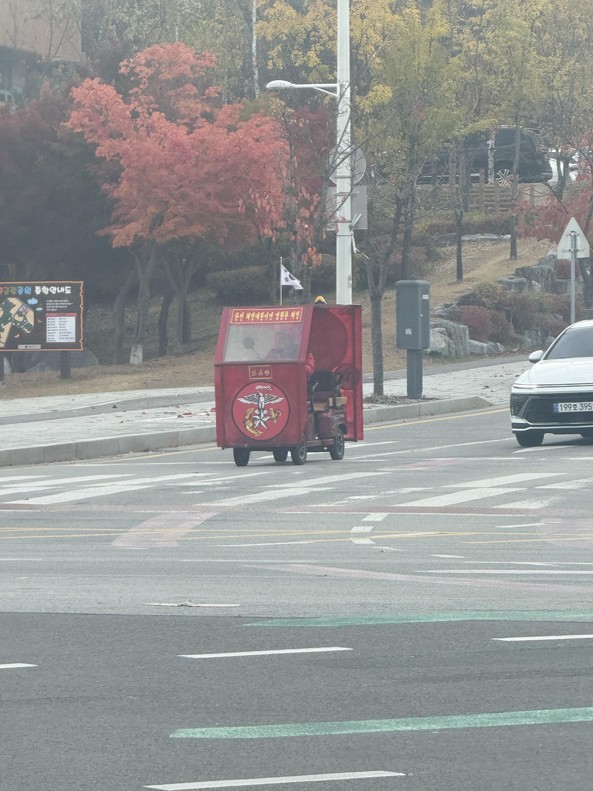

때는 892년 11월 10일, 단풍마저 해병의 허락을 받고 붉어지던 가을날이었다. 횡단보도 앞에서 신호를 기다리던 그때, 지붕에 태극기를 꽂은 새빨간 오도바이 한 대가 위풍당당하게 굴러오더니 내 앞에 멈춰 섰다. “아쎄이! 시동 걸어라!” 나는 황급히 차체를 살피며 여쭈었다. “악! 열쇠는 어디 있습니까!” 그러자 운전석의 견쌍섭 해병님께서 백미러 너머로 나를 흘겨보셨다. “새끼… 기열! 열쇠 찾을 힘이 있으면 뒤에서 밀어라. 네가 엔진이다!” 아! 어쩐지 배기음이 들리지 않는다 했더니, 지난 엔진도 전역한 모양이었다. 그렇게 나는 횡단보도 하나 건너려다 후륜구동으로 입대했다. 악!


후장륜간구동 기합!!